Information
Tutorial
-
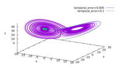
Adaptive timestepping for the Lorenz attractor -
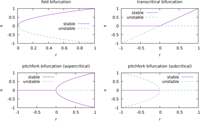
Stability analysis and bifurcation tracking of ODEs -
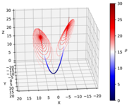
Hopf branch switching to periodic orbits -
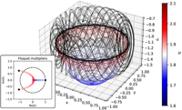
Stability of periodic orbits via Floquet multipliers -
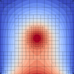
Spatial adaptivity for a 2d Poisson equation -
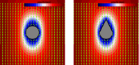
Flow around a sphere (Stokes law) -
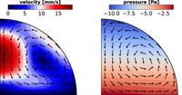
No normal flow through a curved interface -
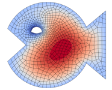
Generation of custom meshes -
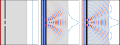
Wave equation -
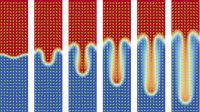
Rayleigh-Taylor instability -
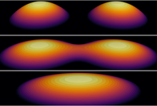
Coalescence of droplets via lubrication theory -
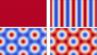
Pattern formation and stability analysis -
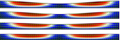
Transient simulation of a free surface -
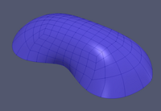
Three-dimensional droplet with varying wettability -
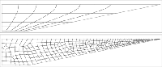
Moving meshes and mesh reconstruction -
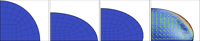
Droplet with Marangoni flow and gravity -
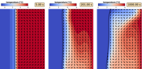
Melting of an ice cylinder -
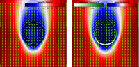
Flow around a sphere with insoluble surfactants -
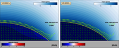
Evaporation of a water droplet -
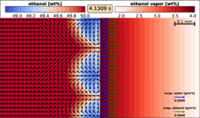
Mixture evaporation from a Hele-Shaw cell -
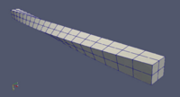
Nonlinear elasticity -
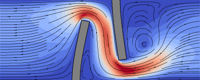
Fluid-structure interaction -
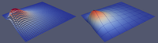
Discontinuous Galerkin methods -
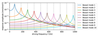
Linear response to periodic driving -
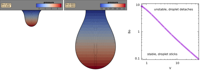
Bifurcation tracking of a detaching droplet -
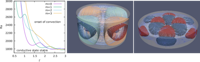
Azimuthal stability analysis -
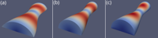
Cartesian normal mode stability analysis -
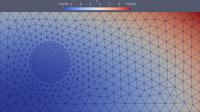
Coupling multiple simulations with preCICE
scroll sideways for more examples
Features
- • Temporal ordinary differential equations •
- • Spatial boundary value problems •
- • Spatio-temporal problems •
- • Moving mesh (ALE) problems •
- • Automatic mesh reconstruction •
- • Spatial & temporal adaptivity •
- • Mixed elements •
- • Additional fields at interfaces •
- • Stability analysis & bifurcation tracking •
- • Periodic orbits & Floquet multipliers •
- • Linear response to periodic driving •
- • Azimuthal stability analysis •
- • Follow eigenbranches •
- • Nonlinear elasticity •
- • Fully symbolically derived Jacobian/Hessian •
- • Automatic non-dimensionalization •
- • Continuous and Discontinuous Galerkin Methods •
- • Multi-Domain and Multi-Physics •
- • Coordinate-system-agnostic formulation of equations •
- • Constraints via Lagrange multipliers •
- • Free surface dynamics with Marangoni flow •
- • Multi-component flow with mass transfer •
- • Vapor-liquid equilibria by group contribution models •
- • Surfactants with versatile isotherms •
- • Contact line dynamics •
- • Cartesian normal model analysis •
- • Coupling simulations via a preCICE adapter •
- • Fluid-structure interaction •
How it works
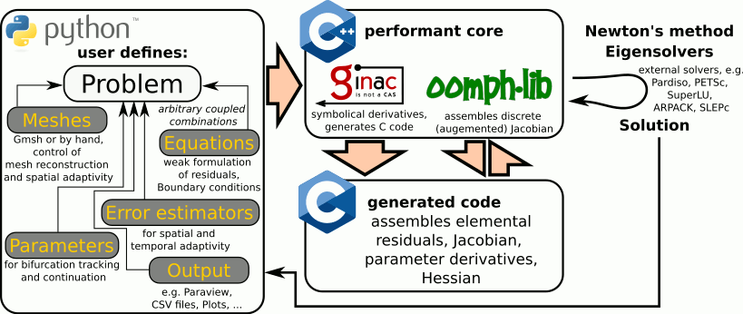